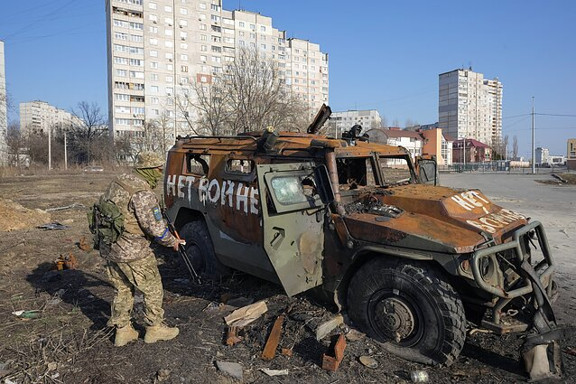

Знайшли підбиту або полишену російську техніку та хочете залишити собі в господарстві?
17 квітня Верховна Рада ухвалила Закон про встановлення винагород за добровільно передану Збройним Силам України придатну для застосування бойову техніку держави-агресора (реєстр. № 7229). За документ проголосували 320 парламентаріїв.
Закон спрямовано на зменшення негативних наслідків збройної агресії російської федерації проти України та бойового потенціалу ворога, запровадження стимулюючих заходів для припинення воєнних дій шляхом встановлення грошової винагороди військовослужбовцям збройних сил, інших силових структур російської федерації, іншим категоріям осіб за добровільно передану Збройним Силам України придатну для застосування бойову техніку держави-агресора.
Винагорода передбачається як для військових рф, так і для громадян України.
Передбачено встановити винагороду військовослужбовцям збройних сил, інших силових структур рф, а також військовослужбовцям Збройних Сил України, інших структур українського сектору безпеки і оборони, громадянам за добровільно передану ЗСУ придатну для застосування бойову техніку держави-агресора в наступних розмірах:
- бойового літака (винищувальної та штурмової авіації) — 1 000 000 доларів;
- бойового вертольота — 500 000 доларів;
- реактивної системи залпового вогню — 25 000 — 35 000 доларів;
- танка, наземної артилерії (самохідної) — 100 000 доларів;
- бойової машини піхоти (десанту), бронетранспортера, броньованої розвідувально-дозорної машини — 50 000 доларів;
- військового автомобіля (вантажного, спеціалізованого), військового тягача, військових інженерних машин: розвідки, розмінування, мінного загородження, мостоукладних, розгородження, для прокладання шляхів, для здійснення землерийних робіт, для подолання водних перешкод — 10 000 доларів;
- корабля 1 або 2 рангу — 1 000 000 доларів;
- крабля 3 або 4 рангу — 500 000 доларів;
- судна військового (допоміжного) забезпечення — 200 000 доларів;
- судна малогабаритного бойового (розвідувального) призначення — 50 000 доларів.
Зазначається, що у разі передачі бойової техніки російськими військовослужбовцями їм забезпечується право (на їхню вимогу) на збереження в таємниці факту передачі ними придатної для застосування бойової техніки держави-агресора, отримання нових документів з новими установочними даними, безпеку їх перебування на території України, створення умов для виїзду до третьої безпечної країни.